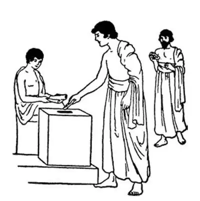
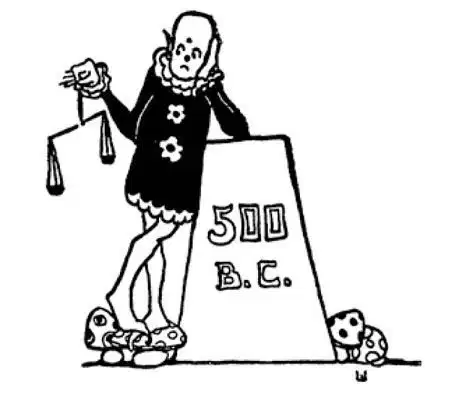

22
Rich Man, Poor Man
雅典的富人和穷人

WHENEVER I pass a group of children playing ball, I almost always hear someone shout, “That's no fair!”
There always seem to be some players who think the others are not playing fair. Sides are always quarreling.
They need an umpire.
When Athens was young there were two sides among the people—the rich and the poor, the aristocrats and the common people—and they were always quarreling. Each side was trying to get more power, and each side said the other wasn't playing fair.
They needed an umpire.
Athens had had kings, but the kings took the side of the rich, and so finally the Athenians had kicked out the last king, and after that they would have no more kings.
About the year 600 B.C. things became so very bad that a man named Draco was chosen to make a set of rules for the Athenians to obey. These rules he made were called the Code of Draco.
Draco's Code made terrible punishments for anyone who broke the rules. If a man stole anything even as small a thing as a loaf of bread, he was not just fined or sent to jail; he was put to death! No matter how small the wrong a man had done, he was put to death for it. Draco explained the reason for such a severe law by saying that a thief deserved to be put to death and should be. A man who killed another deserved more than to be put to death, but unfortunately there was no worse punishment to give him.
You can understand how much trouble the laws of Draco caused. They were so hard that a little later another man was called upon to make a new set of laws. This man was named Solon, and his laws were very just and good. We now call senators and other people who make our laws solons after this man Solon who lived so long ago, even though their laws are not always just and good.
Still the people were not satisfied with Solons laws. The upper classes thought the laws gave too much to the lower classes, and the lower classes thought they gave too much to the upper. Both classes, however, obeyed the laws for a while, although both classes complained against them.
But about 560 B.C. a man named Pisistratus stepped in and took charge of things himself. He was not elected nor chosen by the people. He simply made himself ruler, and he was so powerful that no one could stop him. It was as if a boy made himself captain or umpire without being chosen by those on the team.
There were others from time to time in Greece who did the same thing, and they were called tyrants . So Pisistratus was a tyrant. Nowadays only a ruler who is cruel and unjust is called a tyrant. Pisistratus, however, settled the difficulties of both sides, and though a tyrant in the Greek sense, he was neither cruel nor unjust. In fact, Pisistratus ruled according to the laws of Solon, and he did a great deal to improve Athens and the life of the people. Among other things he did, he had Homer's poems written down, so that people could read them, for before this time people knew them only from hearing them recited. It is remarkable how histories can be passed down orally—just by telling the story. In cultures without writing, people had to have very good memories.
The people put up with Pisistratus and also with his son for a while. Finally the Athenians got tired of the son's rule and drove all the Pisistratus family out of Athens in 510 B.C..
The next man to try to settle the quarrels of the two sides was named Cleisthenes. It is hard, sometimes, to learn the name of a stranger to whom we have just been introduced unless we hear his name several times. I will say over his name so that you can get used to hearing it:
Your parents may be poor or they may be rich.
If they are poor each has one vote when there is an election.
If they are rich each has one vote but only one vote and no more.
If people break the laws, whether they are rich or whether they are poor, they must go to jail.

Ostracism （陶片放逐制度）
It was not always so; it is not always so even now. But long ago it was much worse.
Cleisthenes gave every man a vote—rich and poor alike—but he did not give women a vote. In ancient times, women often were kept out of politics. Still, the people of Athens believed that Cleisthenes ruled wisely and well. Cleisthenes started something called ostracism. If for any reason the people wanted to get rid of a man, all they had to do was to scratch his name on any piece of a broken pot or jar they might find and drop it in a voting-box on a certain day. If there were enough such votes, the man would have to leave the city and stay away for ten years. This was called ostracism , from the Greek name for such a broken piece of pottery, on which the name was written. Even today we use this same word to speak of a person whom no one will have anything to do with, whom no one wants around, saying he had been ostracized.
Have you ever been sent away from the table to the kitchen or to your room for misbehaving?
Then you, too, have been ostracized.
【中文阅读】
每次我从一群玩球的孩子们身旁经过时，几乎总会听到有人喊叫：“这太不公平了。”
好像总有一些参赛选手认为别的选手没有公平比赛，双方老是争吵。
他们需要一个裁判员。
当雅典还是一座新兴城市的时候，雅典人分成了两派——富人和穷人，也就是贵族和平民——而且他们老是发生争执。每派人都试图获得更多的权利，而且每一派人也总是说另一派人不按规矩行事。
他们需要一个裁判员。
雅典以前有过国王，但是国王总是站在富人一边，所以，雅典人撵走了最后一个国王，从那以后，雅典再也没有国王了。
大约在公元前600年，雅典的状况变得很糟糕，于是，大家选出了一个叫德拉古的人制定了一套规则让雅典人遵守。他制定的这套规则被称作《德拉古法典》。
《德拉古法典》规定任何触犯法律的人都将受到严酷的惩罚。如果一个人偷了点东西，哪怕就是一块面包，不是罚他款，或把他关进监狱，而是将他处死！不管一个人犯的过错多么轻微，他都要被处死。德拉古在解释他制订严刑峻法的理由时是这样说的，小偷就该被处死，而且应当被处死。杀人犯应受比死刑更严厉的惩罚，但可惜没有比死刑更严厉的惩罚了。
你们现在能明白《德拉古法典》带来了多少纠纷吧。这法律实在太过严酷，所以，不久人们就呼吁另一个人来制订一部新的法典。这个人名叫梭伦，他制订的法典非常公正合理。现在我们把参议员和其他立法议员称为“梭伦”，就是源于这个古 代的立法者，不过现在的立法议员所制订的法律可不见得都是公正合理的了。
但是人们对梭伦的法典还是不满意。上层阶级的人认为法典给了下层阶级的人民太多的好处，而下层的平民则感觉法典过于袒护上层的贵族。然而，尽管两个阶级的人都抱怨法典对自己不公平，但是在一段时间内，他们都还是遵守这个法典的。
但是，大约在公元前560年，有个名叫庇西特拉图的人步入政坛，并大权独揽，掌管了国家事务。他没有经过人民的选举或挑选，就自立为王了，而且他的势力非常强大，没有人阻止得了他。这就好像一个男孩没经过队员们的挑选就自立为队长或裁判员一样。
此后，不时有其他希腊人也做这种自封为王的事，他们都被称为“僭主”。因此，庇西特拉图是个僭主。现在，只有那些残暴不仁的统治者才叫僭主。庇西特拉图虽然是希腊人所说的僭主，但他解决了贵族和平民总是争执的难题。庇西特拉图不残暴，相反，还很公正。其实，庇西特拉图是遵照梭伦的法典来治理雅典的，而且他还采取了很多措施来建设雅典、改善雅典人的生活。除此以外，他还让人把荷马的诗歌抄录下来，以便人们阅读，因为在此之前，人们只能通过口口相传才知道这些诗。怎样通过口述——只是通过讲故事就把历史流传下来真是很了不起。没有文字的文化传承只能依靠人们的好记性。
人们容忍了庇西特拉图的统治，也容忍了他儿子一段时间，但是最后雅典人厌烦了他儿子的统治，于是在公元前510年把所有庇西特拉图家族的人都赶出了雅典。
下一个试图解决贫富两派冲突的人名叫克里斯提尼。有时候，我们很难记住一个刚介绍给自己的陌生人的名字，除非我们多听几遍他的名字。现在，我把他的名字多说几遍，这样你听惯了也就熟悉了。
你们的父母可能是穷人，也可能是富人。
如果他们是穷人的话，每次选举的时候，他们俩各自都可以投一张票。
如果他们是富人，每次选举的时候，他们俩也各自有一张选票，但仅仅一人一票，不会更多了。
如果有人犯法了，不管他是富还是穷，都得进监狱。
过去情况并不总是这样，即使现在，情况也不见得都是这样。但是在古代社会，情况可就糟糕多了。
克里斯提尼给了每个男人选举权——穷人和富人都一样——但是他没有给女人选举权。在古代，女人经常被排除在政治之外。尽管这样，雅典人还是认为克里斯提尼的统治是贤明的、令人满意的。克里斯提尼开创了“陶片放逐制度”。如果出于某种原因，大家想要除掉一个人，他们所要做的就是在他们随手捡起的破陶罐的碎片上刮上这个人的名字，然后在一个特定的日子里将这个碎片扔进“投票箱”里 即可。如果“选票”达到了足够的数目，这个人就必须离开雅典，在外面待上十年。这就叫“陶片放逐制度”，希腊语这个词的意思就是写着名字的陶器碎片。即使今天，我们还经常用“放逐”（ostracize ）一词。如果有个人，大家都不愿意搭理他，也不愿意待在他周围，我们就说他被放逐了，意思是他受到大家的“排挤”。
你有过因为调皮捣蛋被家人从餐桌边赶到厨房或自己房间的时候吗？
如果有，那么你也被“放逐”过了。

公元前500年